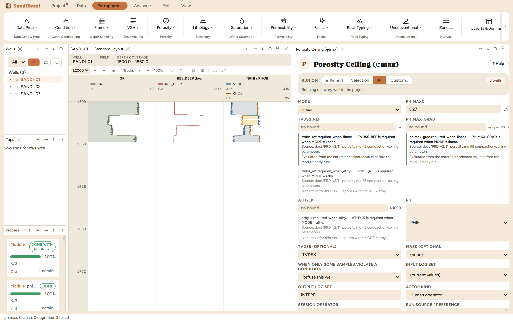
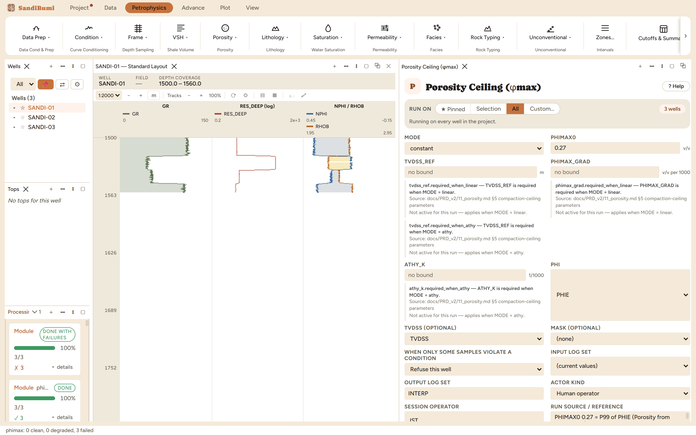
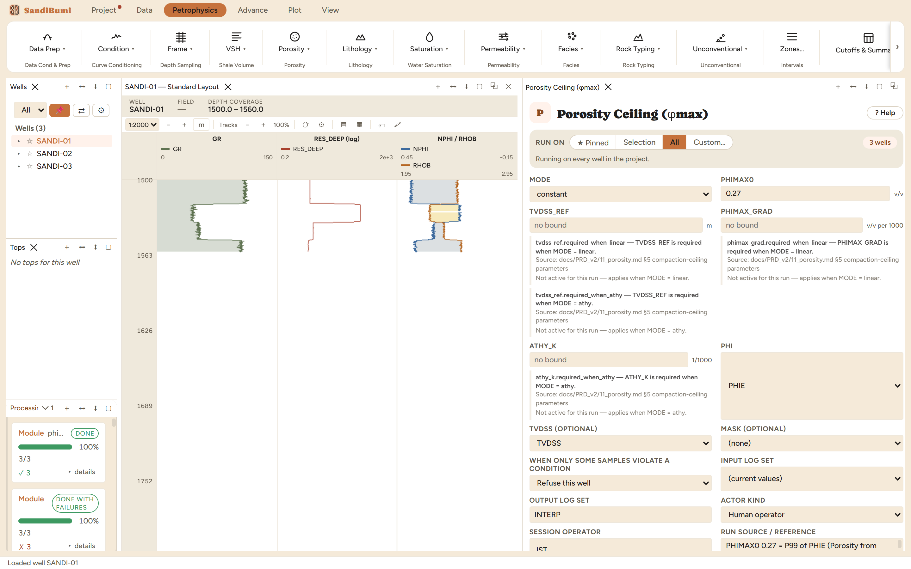

A porosity ceiling: caps an interpreted porosity at the field's compaction-controlled upper limit, the "max core porosity" line a crossplot against depth shows. This is a different job from the per-module PHIE limiting inside each porosity pane: that limiting is arithmetic hygiene on one module's output, while this module states a field-level geological ceiling and applies it to whichever porosity you point it at, writing the capped curve and the ceiling itself as outputs.
Three ceiling shapes: CONSTANT (one number, per-zone overridable), LINEAR (φmax falls by PHIMAX_GRAD per 1000 TVDSS units below TVDSS_REF), and ATHY (exponential decline). The trend modes are statements about compaction, so they run on true vertical depth, and a well with no survey gets measured depth substituted, recorded per well rather than silently.
The pane ships in LINEAR mode with no gradient and no reference depth, so running it with only a ceiling value entered is refused, all three wells, before anything computes, demonstrated live and quoted from the per-well report:
TVDSS_REF is required when MODE = linear.
A compaction trend without its reference and gradient is not a ceiling, and the module refuses to guess either. For a single-number ceiling, MODE must say CONSTANT explicitly, which is the demonstration's canonical run.


3 clean. Run live: 12 of 1185 samples capped, and the written ceiling curve PHIE_MAX reads exactly 0.27 everywhere:
SELECT COUNT(*) FILTER (WHERE c.value < p.value - 1e-6) FROM computed_curves c JOIN computed_curves p ON c.well_id = p.well_id AND c.depth = p.depth AND p.curve_name = 'PHIE' WHERE c.curve_name = 'PHIE_CAP' AND NOT isnan(c.value) AND NOT isnan(p.value)
Twelve samples is what a P99-derived cap should touch: a ceiling is meant to shave outliers, and one capping a large share of the section is either the wrong ceiling or the wrong porosity. The trend variant, run live: LINEAR with the ceiling falling 0.1 v/v per km from 1400 m makes the ceiling a depth trend reading 0.253–0.2605 across the section and caps 17 samples, and because these wells carry no deviation survey, each well's report records that measured depth stood in for TVDSS. That substitution note is the module telling you the trend's depth frame honestly.
